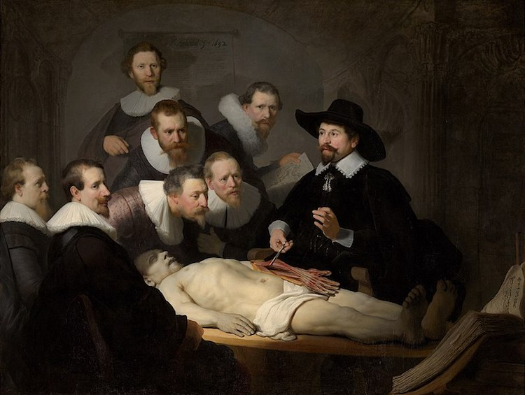

The Shines. |
| LEONARDO DA VINCI | MICHELANGELO | ARTEMISIA GENTILESCHI | REMBRANDT | JMW TURNER |
| VINCENT VAN GOGH | PAUL CÉZANNE | CLAUDE MONET | MARY CASSATT | PABLO PICASSO |
| LEONARDO DA VINCI | |
| Not only did Leonardo da Vinci experiment with mediums, but he also innovated different ways of creating striking compositions. In fact, his signature triangular composition is still used today and is widely considered one of the most visually pleasing painting layouts. He was also an early advocate of studying anatomical models to perfect his art, something that was illegal at the time. Although legendary for paintings like Mona Lisa and The Last Supper, da Vinci's artistic output was relatively small; only 17 surviving works can be attributed to him. | |
| MICHELANGELO | |
| While Michelangelo may have viewed himself as a sculptor, his placement on this list shows his true genius. Though relatively few Michelangelo paintings survive, those that do are considered some of the best in the world. His ability to quickly master fresco painting and take it to new heights is evident in both the Sistine Chapel Ceiling and The Last Judgement, which continue to inspire artists today. |  |
| ARTEMISIA GENTILESCHI | |
| This powerhouse of Baroque painting is also one of the first female artists to see great success. She was also young and producing professional art by the age of 15. Through the course of the 17th century, Artemisia Gentileschi created dynamic and explosive paintings that feature her trademark chiaroscuro and rich colors. While her art was sometimes overshadowed by her Baroque peer Caravaggio, over time her incredible skill and role in pioneering female artists have come to be appreciated. |
| REMBRANDT | |
| Rembrandt van Rijn is so famous that even today we call this Dutch master by his first name. Painting everything from genre scenes to landscapes to great historical and mythological paintings, Rembrandt was the dominant force in Dutch art for much of the 17th century. His masterful use of light, as well as his refined and expressive approach to painting have made him a favorite amongst art lovers to this day. If you want to see his work in person, look for his portraits or illustrations from the Bible as they are among his most well regarded |  |
| JMW TURNER | |
| British Romantic painter JMW Turner is known as a forerunner of modern art. Coming from traditional Neo-classical painting, Turner began striving for realism in his work—which was unheard of at the time. Through thousands of watercolors and oil paintings, he experimented with light, color, and brushwork. He even worked on his oil paintings outside, something that would later influence the Impressionists. |
| VINCENT VAN GOGH | |
| Though he is seen today as one of the most influential painters in Western art, Vincent van Gogh was not commercially successful during his lifetime. Since the early 20th century, however, his masterful paintings have been prized for their expressive emotion. Filled with dramatic brushstrokes and bold color, the Post-Impressionist painter's artwork is a roadmap to modern art. Van Gogh's work, particularly Starry Night, remains so iconic that it is celebrated today as immersive art installations and recreated using drone technology. |
| PAUL CÉZANNE | |
| Leading Post-Impressionist painter Paul Cézanne has enjoyed a lasting legacy thanks to his innovative approach to perspective, vivid color palette, and use of painterly brushstrokes that were meticulously arranged into geometric forms. In fact, his preference for breaking down forms and using bold tones has often led him to be called a precursor to Cubism. |
| CLAUDE MONET | |
| From bringing his easel out of the studio and into the environment to his landmark studies of time and light, Claude Monet is perhaps the most beloved of all Impressionist painters. In fact, his painting Impression, Sunrise is credited with launching the entire art movement, and his series of water lilies is a part of his lasting legacy with over 250 iterations of the subject. |
| MARY CASSATT | |
| As part of the Impressionist group, Mary Cassatt had a significant role in shaping the movement's legacy. The American artist broke boundaries with her loose brushstrokes and luminous colors and is well known for her focus on mothers and children as her subjects. Her intimate depictions showing even the most ordinary moments in motherhood were revolutionary at the time and had helped forge her legacy and pave the way for future female artists. |
| PABLO PICASSO | |
| In an 80-year career that moves through multiple styles and over 20,000 works, Pablo Picasso is undoubtedly one of the most recognized names in Western art. His role in launching Cubism would be enough to cement his status in the history books, but Picasso did much more. He is recognized for showing how Classical art can be mastered—and then manipulated—to become something new, fresh, and modern. |  |